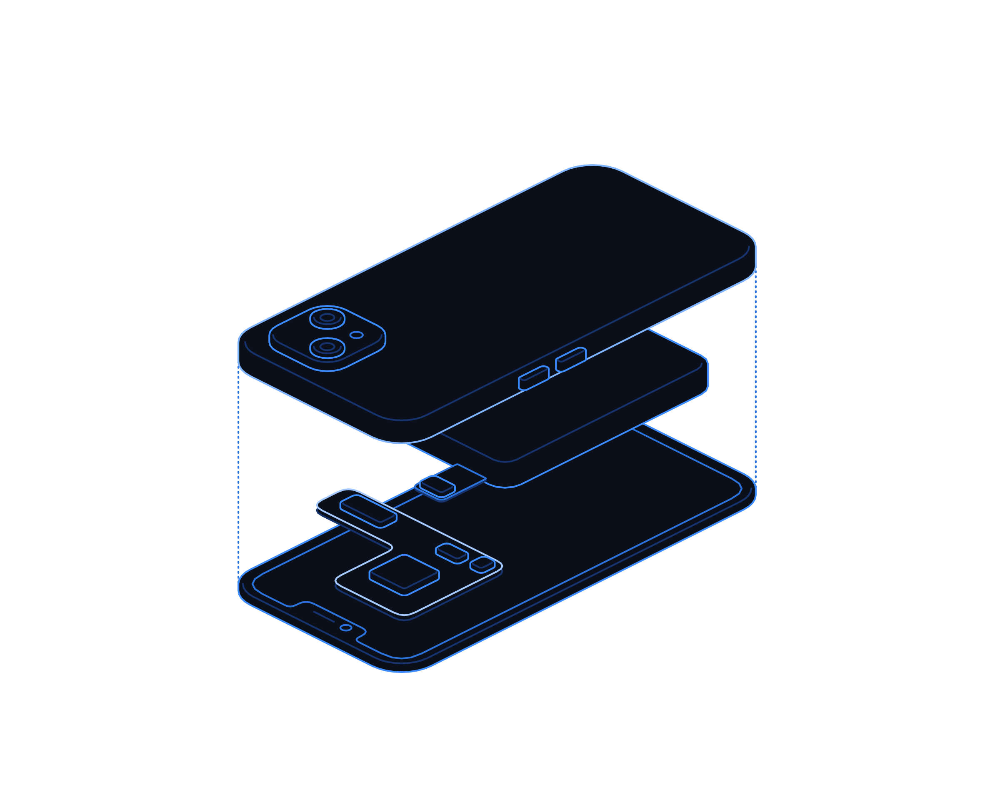

Guard Your Voice


Hot topics · Playbook
No. 05 · November 2026
Hot topics · Customer channels
Guard your
voice.
When attackers can send messages through your own app, your customers hear them in your voice. How to find, lock down and monitor every channel that speaks for you.
Transputec playbooktransputec.com
Inside
Contents
A practical guide to protecting the channels your customers trust: app notifications, email, SMS and social accounts, and the third-party platforms that send them.
Foreword03
Introduction04
01Map every voice you have06
02Secure the platforms behind them11
03Respond fast and honestly16
 Contents
ContentsGuard Your Voice · Hot Topics · Playbook02 / 24
Foreword
Your customers trust a message because it comes from you. That trust is now a target.
On 6 October 2026, ASOS app users received a push notification headed "ASOS HACKED". ASOS did not write it. The retailer said it was investigating unauthorised activity involving third-party platforms it uses to communicate with customers, and two days later said the intruder had obtained an employee's login details by impersonating a trusted contact.
The technical detail matters less than the lesson. The attackers did not need to break the app. They needed access to the tools that send messages through it. For most organisations those tools sit with a marketing team and a handful of SaaS suppliers, outside the usual security reviews.
This playbook helps you find every channel that can speak to your customers, protect the accounts and keys behind them, put a human check on mass sends, and prepare to tell customers the truth quickly if something goes wrong. It is written for IT, security, marketing and customer teams to use together.
The Transputec team
Transputec
Foreword Guard Your Voice · Hot Topics · Playbook03 / 24
Introduction
Every channel that can reach a customer is a channel an attacker can borrow.
Push notifications, marketing emails, text messages and social posts carry your brand to people who have chosen to listen. If someone else gets the keys, they inherit that attention and that trust.
See every channel
Most organisations cannot list every platform that can message customers. Build the inventory first, with an owner for each entry.
Protect the send button
Strong sign-in, fewer people with send rights, protected API keys and a second pair of eyes for mass messages.
Be ready to speak first
Have a tested plan to tell customers what happened, quickly and honestly, before attackers or the press tell the story for you.
Introduction Guard Your Voice · Hot Topics · Playbook04 / 24
If it can message your customers, it is part of your security perimeter.
Marketing platforms, notification services and SMS gateways deserve the same care as your finance systems. They hold your customers' attention, and often their data.
Introduction Guard Your Voice · Hot Topics · Playbook05 / 24
01
Part 01
Map every
voice.
You cannot protect channels you do not know about. Start with an honest inventory.
01Why channels are targets
02How hijacks usually happen
03The channel inventory
04Building it this week
Part 01 Guard Your Voice · Hot Topics · Playbook06 / 24
Why channels are targets
The message came from inside the app
The attackers did not need to break the app. They needed the tools that send messages through it.
Most security programmes are built around keeping attackers away from data and systems. Customer channels are different. Their whole purpose is to put a message in front of millions of people, instantly, with your name on it. That makes them valuable to anyone who wants to extort, defraud or embarrass you.
The ASOS case shows how this plays out. The rogue notification was addressed to the company's data protection officer and IT team, but it was delivered to customers. It turned a private extortion demand into a public event, and the retailer's share price fell by around 10% that day according to Reuters. Every customer knew something had happened before the investigation had properly begun.
ASOS is not the only example this year. In January 2026 Betterment, a US investment firm, said an intruder used social engineering to reach a third-party platform it uses for marketing and customer communications, and sent a fraudulent crypto offer to some customers.
The common thread is that the sending tools sit with suppliers. A push notification service, an email marketing platform or a customer data platform will often hold both the audience list and the ability to send. Access is typically by username and password, sometimes shared, and sometimes without multi-factor authentication.
These tools are usually bought by marketing, connected by a developer, and then forgotten by IT. Licences are renewed, staff leave, and agency logins linger. Nobody reviews who can send to the whole customer base.
The fix is not exotic. It is the same discipline you apply to email, finance and admin accounts, extended to the platforms that carry your voice.
Why channels are targets Guard Your Voice · Hot Topics · Playbook07 / 24
How hijacks happen
Four common routes to your send button
General patterns, not confirmed details of any one case.

01
Stolen or tricked logins
A user is phished or tricked by someone posing as a trusted contact. ASOS said its incident began this way.
02
Leaked API keys
Push, email or SMS keys left in code or old integrations can send messages without any login.
03
Connected app tokens
Long-lived integration tokens. Google said stolen tokens for one sales tool exposed many Salesforce environments in 2025.
04
Weak supplier controls
Some platforms allow sign-in without MFA or with broad default rights. Turn the controls on.
Map every voice Guard Your Voice · Hot Topics · Playbook08 / 24
The inventory
Your customer channel inventory
List every route to a customer, the platform behind it and who can press send. This is your starting map.
Channel
Platform behind it
Who can send
What to check
App push
Notification service or customer data platform linked to your app.
Marketing, CRM team, developers, agencies.
MFA, send rights, API keys in the app build.
Marketing email
Email service provider, often with its own sending domain.
Marketing, agencies, automated journeys.
MFA, sender domains, list export rights.
Transactional email
Email API used by your website and systems.
Systems via API keys, a few engineers.
Key storage, rotation, sending limits.
SMS
SMS gateway or messaging provider.
Service, marketing and systems.
Sender IDs, keys, spend and volume alerts.
Social accounts
Native accounts and scheduling tools.
Social team, agencies, executives.
Business manager roles, MFA, recovery details.
Website banners and chat
Content system, chat and personalisation tools.
Content editors, support, suppliers.
Who can publish site-wide messages.
Contact centre
Telephony, outbound dialling and messaging tools.
Service agents, team leaders, suppliers.
Caller ID controls, scripts, outbound campaign rights.
Map every voice Guard Your Voice · Hot Topics · Playbook09 / 24
This week
Build the inventory in five steps
A small group from IT, marketing and customer service can do this in a few working sessions.
01
Ask every team what they use to message customers
Include agencies, regional teams and anything bought on a company card. Finance can list SaaS invoices to catch the rest.
02
Record the platform, owner and admin for each
One named business owner and one technical owner per platform. If nobody owns it, that is your first finding.
03
Export the user list from each platform
Count admins and senders. Flag leavers, shared logins, agency accounts and anyone who has not signed in for 90 days.
04
Find the keys and connections
List API keys, connected apps and integrations, where each key is stored and when it was last rotated.
05
Rank by reach
Which channels can reach your whole customer base in one action? Those go to the top of the list for Part 02.
Remember
An inventory with owners is the single most useful output of this playbook. Everything else builds on it.
Map every voice Guard Your Voice · Hot Topics · Playbook10 / 24
02
Part 02
Lock the
send button.
Make it hard to get in, hard to send at scale, and easy to notice when something is wrong.
01Five principles
02Push and notification platforms
03Approval for mass sends
04Three channels in practice
Part 02 Guard Your Voice · Hot Topics · Playbook11 / 24
Principles
Five principles for marketing and messaging tools
Treat every platform that can reach customers as a privileged system.
01
Single sign-on and strong MFA everywhere
Connect platforms to your identity provider where possible. Where not, enforce MFA on every account and prefer phishing-resistant methods such as passkeys or security keys.
02
Least privilege by default
Most users need to draft, not send. Keep the right to send to the full audience, export lists or create keys to a small named group.
03
Keys are secrets, not settings
Store API keys in a secrets manager, scope them narrowly, rotate them on a schedule and never ship them in app code or documents.
04
Two people for big sends
Any message to a large audience needs a second approver. Build it into the tool where it exists and into the process where it does not.
05
Watch the logs
Send platform audit logs to your security monitoring and alert on new admins, new keys, list exports and unusual send volumes.
Lock the send button Guard Your Voice · Hot Topics · Playbook12 / 24
Push notification platforms
The channel that appears on a customer's lock screen with your logo. Here is how to protect it.
Accounts
Inventory every user on the push or customer data platform. Remove leavers and agencies who no longer need access. Enforce MFA and SSO.
Keys and certificates
Find where push credentials and server keys live. Restrict them to the servers that need them and rotate them after any staff change in the team.
Send controls
Limit who can target the whole audience. Use segments, test sends and approval steps. Set volume alerts with the provider.
Kill switch
Know how to pause all sending in minutes, who can do it out of hours, and how to revoke keys quickly. Practise it once.
Owner
Head of CRM with the security lead
Bring this to the monthly review, with a date for each action.
Lock the send button Guard Your Voice · Hot Topics · Playbook13 / 24
Approval workflow
A safe path for any mass message
Simple enough for marketing to follow every day, strong enough to stop a rogue send.
Draft
Message created in the platform by an authorised user, with audience and timing set.
Review
A second named person checks content, links, audience size and sender identity.
Approve
Approval is recorded in the tool or ticket. Sends above a set audience size need it every time.
Send
Message released. Volume and delivery are watched for the first minutes.
Monitor
Alerts fire on sends outside approved windows, from new users or above normal volumes.
If the platform cannot enforce approval, restrict full-audience send rights to two or three people and log every use.
Lock the send button Guard Your Voice · Hot Topics · Playbook14 / 24
In practice
Three channels, three sets of controls
App push
Lock down the notification service
The risk
A rogue alert reaches every app user within seconds.
Key controls
SSO and MFA, few senders, scoped keys, approval above a set audience size.
Check monthly
User list, key age, any sends outside approved times.
Supplier question
Can you enforce MFA for every user and send us audit logs?
Email
Protect the email platform and domain
The risk
Phishing sent from your genuine domain passes many filters.
Key controls
MFA, limited export and send rights, SPF, DKIM and DMARC set to enforce.
Check monthly
New users, new sending domains, list exports, volume spikes.
Supplier question
Do you alert us to new admins, new keys or large exports?
SMS and social
Guard texts and social accounts
The risk
Fake texts or posts send customers to scam sites.
Key controls
Registered sender IDs, MFA on social business accounts, no personal recovery numbers.
Check monthly
Who holds admin roles, agency access, spend and volume.
Supplier question
How do you verify a request to change sender IDs or account owners?
Lock the send button Guard Your Voice · Hot Topics · Playbook15 / 24
03
Part 03
When it
goes wrong.
If a rogue message goes out, your customers will know before you do. Be ready to act and to speak.
01The first hours
02Reporting duties
03Telling customers
04Your 90-day plan
Part 03 Guard Your Voice · Hot Topics · Playbook16 / 24
The first hours
Six actions when a rogue message goes out
Agree these in advance, with names and phone numbers, so nobody waits for permission.
01
Stop further sends
Pause the platform, revoke API keys and suspend the suspected accounts. Speed matters more than elegance.
02
Preserve evidence
Export audit logs, send records and sign-in history before anything is reset or overwritten.
03
Tell customers what to do
Publish a short holding message on your own site and app: what happened, what not to click, what you will never ask for.
04
Start the reporting clock
Bring in your data protection officer straight away. If personal data may be involved, the 72-hour assessment has begun.
05
Contact your suppliers
Ask the platform provider for logs and help. Under UK GDPR, processors must tell you about breaches without undue delay.
06
Brief staff and service teams
Give customer service a script, so customers hear the same facts from every channel.
Respond fast Guard Your Voice · Hot Topics · Playbook17 / 24
Reporting basics
UK GDPR breach reporting in brief
A short guide, not legal advice. Check the ICO's current guidance and take advice on your own case.
Question
What the law says
What to do
When must we tell the ICO?
Without undue delay and, where feasible, within 72 hours of becoming aware of a personal data breach.
Start the clock at awareness, not at the end of the investigation.
Do all breaches need reporting?
No. Not if it is unlikely to result in a risk to people's rights and freedoms.
Record the reasoning either way. All breaches must be documented.
What if we do not have all the facts?
You may provide information in phases.
Report what you know, then update.
When must we tell customers?
Without undue delay when a breach is likely to result in a high risk to them.
Plan wording in advance and say what they should do.
What about our suppliers?
A processor must notify the controller without undue delay.
Write this into contracts with clear timings and contacts.
Respond fast Guard Your Voice · Hot Topics · Playbook18 / 24
Telling customers
Speak first, speak plainly, and do not guess
Say what you know, what you do not know yet, and when you will update. Then keep that promise.
A hijacked channel removes the usual breathing space. When attackers announce the incident to your customers, the communication clock starts at the same moment as the investigation. Lawyers who commented on the ASOS case noted that this leaves little time to investigate before communicating.
The temptation is to say as little as possible, or to offer reassurance that later turns out to be too narrow. ASOS first said basic contact details may have been accessed. Two days later, after the BBC reported seeing a sample of stolen data that included more detail, the retailer gave a fuller account. Early statements will often need updating. The aim is to make sure updates add to what you said rather than contradict it.
Good incident messages share a pattern. They say what happened in plain words, what you know and do not yet know, what customers should do, what you will never ask them for, and when you will update them next. They avoid phrases such as "no evidence" unless you have actually looked.
Use channels you control and that customers can verify: your website, your app's own screens, and email from your normal domain if it is not the compromised channel. Do not include links in urgent messages if you can avoid it. Tell people to go to the app or website directly.
Expect scams to follow. The NCSC told ASOS customers to assume they were affected and warned that suspicious messages can arrive some time after a breach. Your messages should warn customers about follow-up scams that use your name.
Write template messages now, approved by legal and communications, with gaps for the facts. On the day you will be glad of them.
Respond fast Guard Your Voice · Hot Topics · Playbook19 / 24
Your 90-day plan
This week, this month, this quarter
A realistic sequence with owners. Adjust timings to your size, but keep the order.
When
Actions
Owner
Check it is done
This week
Build the channel inventory. Remove leavers and unused agency logins. Confirm MFA on the top three channels.
IT lead with head of marketing
Inventory signed off. User lists exported.
This week
Agree who can pause each platform out of hours, and test that they can.
Security lead
Named contacts and a timed test.
This month
Move platforms to SSO where possible. Restrict full-audience send rights. Find and rotate API keys.
IT and CRM owners
Admin count down. Keys in a secrets store.
This month
Introduce approval for mass sends. Send platform logs to monitoring with basic alerts.
Marketing ops and security
Alerts fire on a test send.
This quarter
Ask suppliers the questions in this playbook. Update contracts with breach notice timings.
Procurement with DPO
Answers on file. Gaps tracked.
This quarter
Run a tabletop exercise on a rogue push message, including customer communications and ICO assessment.
Incident lead
Lessons logged and actions dated.
Respond fast Guard Your Voice · Hot Topics · Playbook20 / 24
Ask now
Questions for your board and your suppliers
Use these to test readiness before an incident tests it for you.
For the board
?Can we list every platform that can message all our customers, and who owns each one?
?How many people can send to our whole customer base without anyone else approving?
?How fast could we stop a rogue message, and who would decide?
?Have we rehearsed telling customers about a breach within hours?
For your suppliers
?Do you enforce MFA or SSO for every user on our account, and can we require it?
?Can you alert us to new admins, new API keys, list exports and unusual send volumes?
?How quickly will you tell us about a security incident affecting our data or account?
Respond fast Guard Your Voice · Hot Topics · Playbook21 / 24
Checklist
Is your voice protected?
Tick what is in place today. Each gap is a task with an owner.
A complete customer channel inventory
Every platform, with a business and technical owner.
MFA or SSO on every messaging platform
Including agency and service accounts.
Full-audience send rights limited to a few named people
Reviewed every quarter.
API keys stored securely and rotated
None in app code or shared documents.
Approval required for mass sends
Enforced in the tool or by process.
Platform logs monitored with alerts
New admins, keys, exports and volume spikes.
A tested kill switch and incident message templates
Including the 72-hour ICO assessment step.
Based on UK GDPR Articles 33 and 34 and NCSC public guidance. Not legal advice.
Respond fast Guard Your Voice · Hot Topics · Playbook22 / 24
Glossary
Words worth knowing
Push notification
A message an app sends to a phone's lock screen or notification centre, usually through a third-party service.
Customer data platform
A system that combines customer data from many sources and is often used to trigger messages.
Email service provider
A platform used to send marketing or transactional email at scale.
SMS gateway
A service that sends text messages on your behalf through mobile networks.
API key
A secret code that lets one system use another's functions, such as sending messages, without a person logging in.
OAuth token
A credential that lets one app act in another on a user's behalf, often for a long time.
Single sign-on (SSO)
Signing in to many tools through one managed identity, so access can be controlled and removed centrally.
Phishing-resistant MFA
Sign-in checks, such as passkeys or security keys, that cannot easily be phished or relayed.
Social engineering
Tricking people into handing over access or information, often by impersonating someone trusted.
DMARC
An email standard that tells receiving servers how to treat mail that fails checks on your domain.
Glossary Guard Your Voice · Hot Topics · Playbook23 / 24
Make sure every
message is yours.
We help organisations map their customer channels, secure the platforms behind them, monitor for misuse and prepare incident communications that hold up under pressure.
Book a channel security reviewtransputec.com
Read the companion report
Hot Topics report No. 05 · Your app, their voice
Transputec · Hot Topics · No. 05